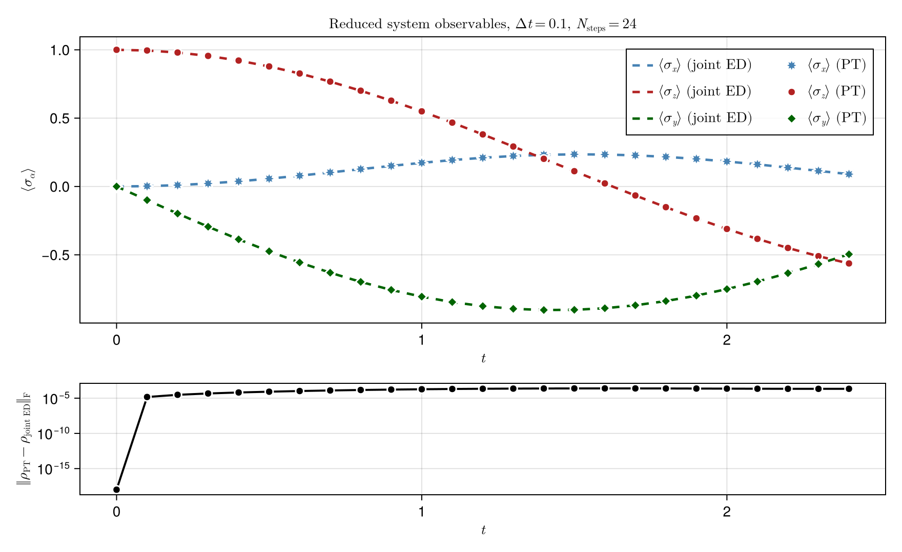
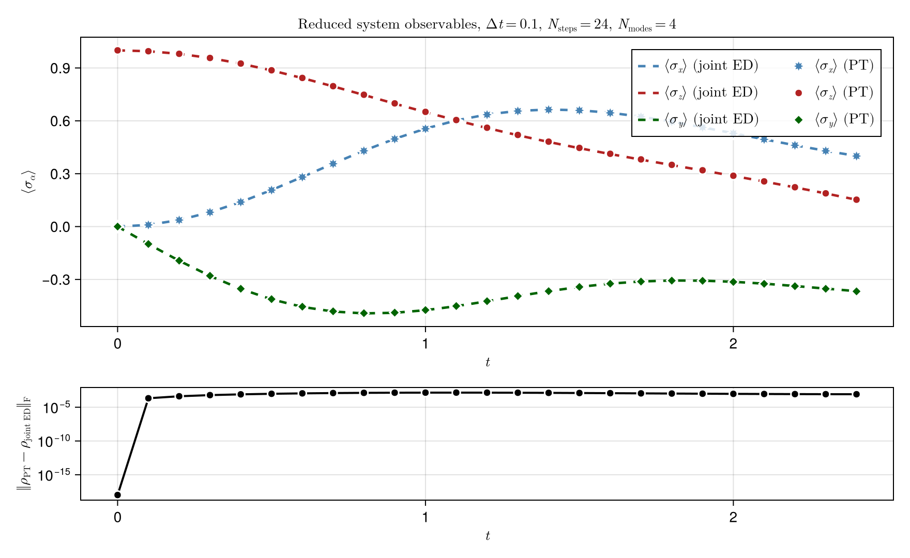

Spin-bath process tensor
How does a spin's motion change when it interacts with one bath spin or several? We construct both processes, follow the system polarisation, and reuse the single-mode process for a final observable readout. A small joint-evolution check separates numerical agreement from the physical interpretation.
The trajectory and error figures are generated separately by scripts/pt_tfim_singlemode.jl and scripts/pt_tfim_multimode.jl. They contain the extended trajectory benchmarks; this page keeps a small runnable calculation and a final-state check.
Model and numerical setup
In units with $\hbar=1$ and system precession frequency one, the Hamiltonian is
\[H = S_x^{(S)} + \sum_{m=1}^{M}\omega_m S_x^{(m)} + \sum_{m=1}^{M}g_m S_z^{(m)}S_z^{(S)}.\]
Every spin starts in $|\uparrow_z\rangle$. The bath spins have no direct interactions with one another, but they all couple to the system. We first use $M=1$, $\omega_1=g_1=1$, then change the bath to four modes. The main observable is the system polarisation $\langle S_z\rangle$.
ITensor's S=1/2 operators are $S_\alpha=\sigma_\alpha/2$. Thus the initial $\langle S_z\rangle$ is $1/2$; a figure showing Pauli expectations $\langle\sigma_\alpha\rangle$ uses twice this normalisation.
using ProcessTensors
using ITensors
using LinearAlgebra
using ITensors.Ops: Exact, Trotter
dt = 0.1
nsteps = 24
final_time = dt * nsteps2.4000000000000004Construct a single-mode process
spin_system supplies the system Hamiltonian. Each spin_mode supplies a bath Hamiltonian, its initial density operator, and its coupling. In the coupling OpSum, site 1 is the bath spin and site 2 is the system spin.
sys_phys = siteinds("S=1/2", 1)
env_phys = siteinds("S=1/2", 1)
env_liouv = liouv_sites(env_phys)
H_sys = OpSum()
H_sys += 1.0, "Sx", 1
system = spin_system(sys_phys, H_sys)
ρ_env0_h = to_dm(MPS(env_phys, ["Up"]))
ρ_env0_l = to_liouville(ρ_env0_h; sites=env_liouv)
H_env = OpSum()
H_env += 1.0, "Sx", 1
coupling = OpSum()
coupling += 1.0, "Sz", 1, "Sz", 2
mode = spin_mode(env_liouv, H_env, ρ_env0_l; coupling=coupling)
bath = spin_bath([mode])ProcessTensors.SpinBath
modes: 1
space: Liouville
site dims: 4
bath Liouville dimension: 4
mode summary:
[1] SpinMode(dim=4, H_terms=1, coupling_terms=1)
The construction fixes the bath, couplings, time grid, and system propagation. Different system preparations and readouts can reuse the resulting object.
pt_single = build_process_tensor(
system, system.sites[1]; environment=bath,
dt=dt, nsteps=nsteps, alg=Exact(), sys_alg=Trotter{2}(),
)24-step ProcessTensor{SpinSystem, SpinBath} | dt=0.1 | t_final=2.4 | maxlinkdim=4
system: SpinSystem(nsites=1, dissipative=false)
environment: SpinBath(nmodes=1, D_bath=4, coupling=true)
core: MPO{Liouville}(length=24, linkdims=[4, 4, 4, …, 4])
Exact() evaluates the mode propagator, while Trotter{2}() places half-steps of free-system evolution on either side of the bath core. This splitting still has a finite-timestep error. Check smaller dt at fixed final time, and converge any bond truncation separately.
Evolve and reuse the process
evolve returns the reduced trajectory for an initial system state. The explicit schedule below asks the same process for a final $\langle S_z\rangle$. The final output belongs to core nsteps - 1; its readout is scheduled at boundary nsteps.
ρ_sys0_h = to_dm(MPS(sys_phys, ["Up"]))
trajectory_single = evolve(pt_single, ρ_sys0_h)
Sz = OpSum()
Sz += 1.0, "Sz", 1
final_sites = output_sites(pt_single, nsteps - 1)
seq = default_schedule(pt_single)
seq += state_preparation(ρ_sys0_h), 0
seq += observable_measurement(Sz, final_sites), nsteps
final_sz_schedule = evaluate_process(pt_single, seq)-0.2815676794556782 + 1.1095903960809904e-16imRead the trajectory
For this one-spin output, a small conversion helper exposes the $2\times2$ density matrix. We reuse it to calculate polarisation, raw trace drift, and the final-state reference error. No trace rescaling is applied.
function spin_density(state_l)
ρ_h = to_hilbert(state_l)
tensor = foldl(*, ρ_h)
site = only(filter(i -> plev(i) == 0 && hastags(i, "Site"), inds(tensor)))
return ComplexF64.(Array(tensor, prime(site), site))
end
states_single = spin_density.(trajectory_single.states_liouville)
sz_matrix = ComplexF64[1 0; 0 -1] / 2
sz_single = [real(tr(sz_matrix * ρ)) for ρ in states_single]
trace_error_single = maximum(abs(tr(ρ) - 1) for ρ in states_single)
println((final_sz=last(sz_single), max_trace_error=trace_error_single,
max_pt_bond=maxlinkdim(pt_single)))
@assert abs(final_sz_schedule - tr(sz_matrix * last(states_single))) < 1e-8
@assert trace_error_single < 1e-8(final_sz = -0.2815676794556782, max_trace_error = 6.217253667085029e-15, max_pt_bond = 4)
Add several bath spins
We now choose four frequencies $\omega_m=0.5+0.1m$ and couplings $g_m=0.2+0.3m$. Building the list of modes is the only new setup step; construction and reduced evolution use the same interfaces. This changes both the number of spins and the coupling distribution, so the comparison does not isolate bath size alone.
nmodes = 4
mode_w = [0.5 + 0.1 * m for m in 1:nmodes]
mode_g = [0.2 + 0.3 * m for m in 1:nmodes]
env_phys_multi = siteinds("S=1/2", nmodes)
env_liouv_multi = liouv_sites(env_phys_multi)
modes = SpinMode[]
for m in 1:nmodes
ρ_env_h = to_dm(MPS([env_phys_multi[m]], ["Up"]))
ρ_env_l = to_liouville(ρ_env_h; sites=[env_liouv_multi[m]])
H_mode = OpSum()
H_mode += mode_w[m], "Sx", 1
coupling_m = OpSum()
coupling_m += mode_g[m], "Sz", 1, "Sz", 2
push!(modes, spin_mode([env_liouv_multi[m]], H_mode, ρ_env_l; coupling=coupling_m))
end
bath_multi = spin_bath(modes)ProcessTensors.SpinBath
modes: 4
space: Liouville
site dims: 4, 4, 4, 4
bath Liouville dimension: 256
mode summary:
[1] SpinMode(dim=4, H_terms=1, coupling_terms=1)
[2] SpinMode(dim=4, H_terms=1, coupling_terms=1)
[3] SpinMode(dim=4, H_terms=1, coupling_terms=1)
[4] SpinMode(dim=4, H_terms=1, coupling_terms=1)
pt_multi = build_process_tensor(
system, system.sites[1]; environment=bath_multi,
dt=dt, nsteps=nsteps, alg=Exact(), sys_alg=Trotter{2}(),
)
trajectory_multi = evolve(pt_multi, ρ_sys0_h)
states_multi = spin_density.(trajectory_multi.states_liouville)
sz_multi = [real(tr(sz_matrix * ρ)) for ρ in states_multi]
trace_error_multi = maximum(abs(tr(ρ) - 1) for ρ in states_multi)
println((bath_spins=nmodes, final_sz=last(sz_multi),
max_trace_error=trace_error_multi, max_pt_bond=maxlinkdim(pt_multi)))
@assert all(isfinite, sz_multi)
@assert trace_error_multi < 1e-8(bath_spins = 4, final_sz = 0.07629696177989481, max_trace_error = 8.770972651140294e-15, max_pt_bond = 256)
The transverse fields rotate the spins while the longitudinal coupling creates system–bath correlations. Several bath frequencies can produce more intricate oscillations and dephasing-like behaviour. A finite spin bath can also support recurrences; a damped-looking segment alone does not establish irreversible relaxation or thermalisation.
The reported PT bond dimension measures storage in this representation. It need not increase monotonically with bath size and does not by itself certify memory or convergence.
Check and interpret the result
For the single-mode case, the joint Hilbert space has only four dimensions. We can exponentiate its full Hamiltonian directly and trace out the bath. With basis ordering bath ⊗ system, reshaping the pure state places the system index in the rows, so $\rho_S=\Psi\Psi^\dagger$ performs the partial trace.
sx_matrix = ComplexF64[0 1; 1 0] / 2
identity_spin = Matrix{ComplexF64}(I, 2, 2)
H_joint = kron(identity_spin, sx_matrix) + kron(sx_matrix, identity_spin) +
kron(sz_matrix, sz_matrix)
ψ0 = ComplexF64[1, 0, 0, 0]
ψ_exact = exp(-im * final_time * H_joint) * ψ0
Ψ = reshape(ψ_exact, 2, 2)
ρ_exact = Ψ * Ψ'
final_error = norm(last(states_single) - ρ_exact)
println((final_time=final_time, pt_sz=last(sz_single),
exact_sz=real(tr(sz_matrix * ρ_exact)), final_frobenius_error=final_error))
@assert isfinite(final_error)
@assert final_error < 0.08(final_time = 2.4000000000000004, pt_sz = -0.2815676794556782, exact_sz = -0.2816402644844898, final_frobenius_error = 0.00021567645173066282)
The final-state error compares the discretised process with unsplit joint evolution. The bound above is a coarse regression check, not an accuracy target. The schedule agreement checks two ways of contracting the same process. Trace preservation alone does not establish positivity.
Companion figures
These images come from the companion scripts, not from the cells above. The single-mode figure uses the same dt = 0.1 and sys_alg = Trotter{2}().

The Pauli expectations stay close to the joint evolution. The lower panel is the more informative diagnostic. At $t=0$ the reduced states are the same product state, so the Frobenius error sits at roundoff, about $10^{-15}$. After the first step it jumps to about $10^{-4}$.
That jump is the Strang splitting, not a failure of the bath contraction. Trotter{2}() writes each interval as a free-system half step, the exact bath propagator, and the matching half step,
\[e^{-iH_S\Delta t/2}\, e^{-i(H_B+H_{SB})\Delta t}\, e^{-iH_S\Delta t/2}.\]
The system and bath generators do not commute, so each step has a local error of order $\Delta t^3$. With $\Delta t=0.1$ that error is already visible on a logarithmic axis, and later steps accumulate it. The mode propagator itself is exact.

The four-spin bath uses the same splitting. Its flatter oscillations are an outcome of the change of model.
These edits test the Strang jump in the single-mode error panel. A new system preparation can reuse the stored process tensor. A new dt or sys_alg cannot: those choices are built into the cores.
- Halve
dtand doublensteps, keeping the same final time. The first-step jump should drop by about a factor of eight if the $\Delta t^3$ error dominates. - Replace
Trotter{2}()byTrotter{1}(). The first-order sandwich is asymmetric, and its local error is $\mathcal O(\Delta t^2)$ rather than $\mathcal O(\Delta t^3)$. The bath propagator stays exact either way. - Change the system preparation to
"Dn". Changing a bath preparation or coupling still requires a new construction.
The workflow remains the same for both baths: construct the process once, then contract it for a trajectory or a selected readout.